Halo, Saya
ARIQ ALFALAH
Building Data-Driven Applications with AI.
I build data-driven applications and AI-powered solutions that turn complex processes into practical digital experiences. Fokus pada pemrosesan data analitik, dashboard Business Intelligence, dan integrasi model AI untuk menyelesaikan masalah nyata.
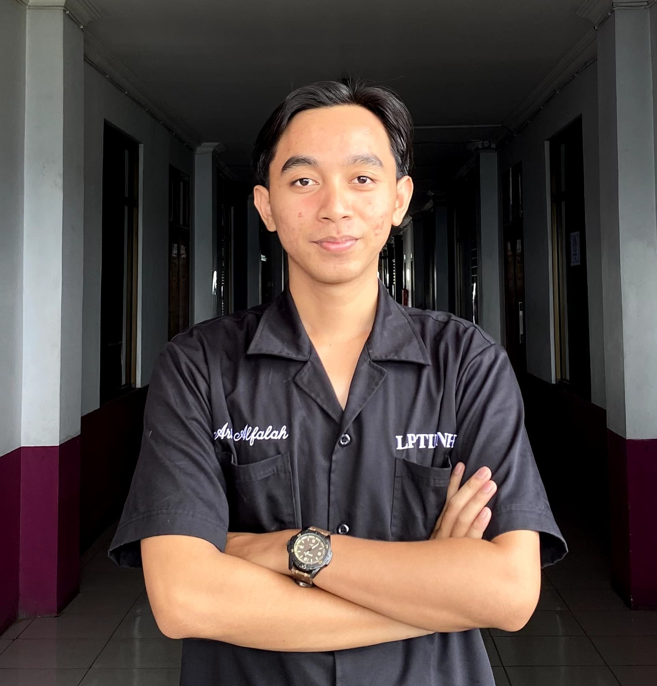
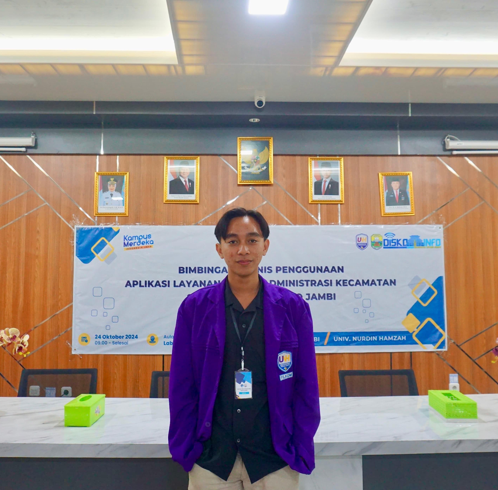
Tentang Saya
Data Analyst, AI Developer & Founder of A.A.Store
Saya adalah lulusan Sarjana (S1) Sistem Informasi dari Universitas Nurdin Hamzah dengan predikat kelulusan sempurna (IPK 4.00). Berfokus pada Data Analytics, Business Intelligence, dan AI Application Development, saya memiliki pengalaman praktis sebagai Data Analyst Intern di PT Yomi Anugerah Wijaya (Kei Medika) serta lebih dari 2 tahun sebagai Asisten Laboratorium Komputer, dan aktif mengembangkan solusi berbasis data menggunakan Python, SQL, Power BI, Streamlit, dan ekosistem modern web.
Selain dedikasi akademik dan riset AI, saya juga merupakan pemilik dan pengembang A.A.Store di Shopee — mengelola penjualan aplikasi premium berlisensi serta menyediakan jasa kustom pembuatan aplikasi web dan solusi kecerdasan buatan (AI) untuk membantu operasional bisnis dan kebutuhan klien.
Featured Projects
Studi kasus proyek analitik data, visualisasi Business Intelligence, dan pengembangan aplikasi yang dibangun berdasarkan kebutuhan praktis.

VORIX — Vision On-Chain AI Agent
Platform autonomous AI agent & radar pasar crypto cerdas yang memindai indikator teknikal (RSI & Fibonacci Support) dari 200+ pair pasar secara real-time, dilengkapi terminal eksekusi otomatis di BSC Testnet dengan Gemini Flash Reasoning Engine.

English Self-Assessment Platform (TOEFL Prep)
Aplikasi web interaktif berbasis riset untuk mengukur dan merefleksikan kompetensi bahasa Inggris mandiri (Grammar Mastery, Reading Comprehension, dan Listening Comprehension) dengan evaluasi skor komprehensif dan histori performa real-time.

Integrated Analytics Dashboard with AI Assistant
Executive Dashboard monitoring kinerja bisnis & operasional Klinik Pratama (pendapatan Rp 3.68M, 4.264 pasien). Terintegrasi dengan asisten AI berbasis LLM untuk menganalisis kueri insight data menggunakan bahasa alami secara real-time.
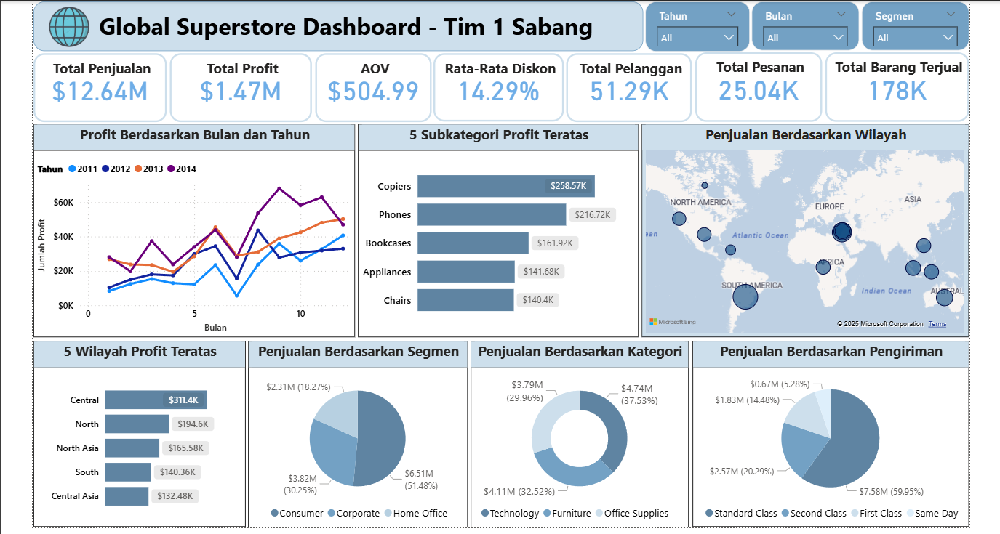
Global Superstore Analytics Dashboard
Dashboard analitik komprehensif untuk memantau performa penjualan ritel global ($12.64M sales, $1.47M profit), segmentasi pelanggan korporat vs individual, analisis profit regional, dan efisiensi logistik pengiriman barang.
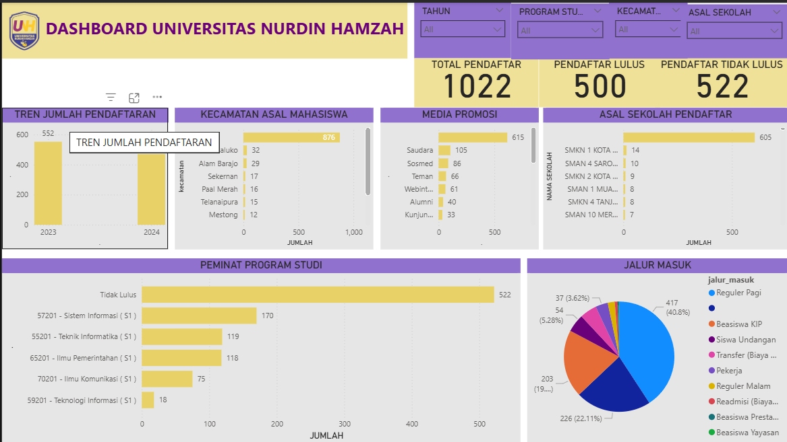
Dashboard PMB Universitas Nurdin Hamzah
Visualisasi data pendaftaran mahasiswa baru (1.022 pendaftar) yang menyajikan insight mengenai tren pendaftaran tahunan, sebaran geografis asal sekolah, jalur seleksi, serta efektivitas saluran promosi kampus.
Technical Skills
Keahlian teknis yang telah diterapkan dalam studi kasus, proyek nyata, sertifikasi resmi, dan operasional laboratorium komputer.
Programming
Data Analysis
BI & Visualization
Database
AI & Integration
Experience & Credentials
Rekam jejak pengalaman profesional, kontribusi akademik, pendidikan, dan sertifikasi resmi yang terverifikasi.
Founder & Software Developer
A.A.Store (Shopee E-Commerce & Jasa Web/AI)
Membangun dan mengelola toko digital di Shopee yang berfokus pada penyediaan lisensi aplikasi premium serta jasa kustom pembuatan aplikasi web dan integrasi model kecerdasan buatan (AI) untuk berbagai kebutuhan klien.
Asisten Laboratorium Komputer
LPTIK Universitas Nurdin Hamzah — Jambi
Bertanggung jawab dalam pengelolaan operasional laboratorium komputer, mendampingi praktikum mahasiswa di bidang teknologi informasi dan komputasi, serta melakukan pemeliharaan perangkat dan infrastruktur laboratorium.
Data Analyst Intern
PT Yomi Anugerah Wijaya (Kei Medika) — Predikat Sangat Baik
Melakukan analisis data operasional dan layanan kesehatan digital pada ekosistem platform Kei Medika, pembersihan serta pengolahan dataset klinis, evaluasi metrik kinerja layanan, dan penyusunan visualisasi data analitis untuk perbaikan operasional dengan predikat kelulusan magang Sangat Baik.
Software & Web Development Intern
CV Klik Anugerah Ciptareka (ciptareka.id) — Predikat Sangat Baik
Melaksanakan kerja praktik magang dalam perancangan dan pengembangan aplikasi web berbasis kebutuhan klien, implementasi modul sistem, serta pengujian kualitas antarmuka web dengan predikat kelulusan Sangat Baik.
Presenter Konferensi Internasional (The 1st JICEDHUM)
FKIP Universitas Jambi
Mempresentasikan riset ilmiah berjudul "Extending the Technology Acceptance Model with Trust in AI: A PLS-SEM Study on Indonesian University Students" pada The 1st Jambi International Conference on Education and Humanities.
S1 Sistem Informasi (IPK: 4.00 / 4.00)
Universitas Nurdin Hamzah — Predikat Kelulusan Sempurna
Menyelesaikan studi sarjana Sistem Informasi dengan Indeks Prestasi Kumulatif sempurna (IPK 4.00). Mendalami analitika data, Business Intelligence, perancangan sistem informasi bisnis, rekayasa basis data, dan integrasi kecerdasan buatan dalam pemecahan masalah organisasi.
Kepemimpinan Organisasi & Kepanitiaan Teknis
HIMASIF UNH & Diskominfo Muaro Jambi
Menjabat sebagai Ketua Pelaksana PHP 2025 (Pesta Harmoni, Pembelajaran, dan Pengenalan) HIMASIF UNH serta berkontribusi sebagai Panitia Teknis Bimtek Aplikasi Layanan Publik kerja sama Diskominfo Muaro Jambi dan UNH.
Sertifikasi & Kredensial Resmi
Klik setiap kartu sertifikat di bawah ini untuk melihat bukti sertifikat resmi ukuran penuh.

PT Yomi Anugerah Wijaya
Data Analyst Intern (Predikat Sangat Baik)

CV Klik Anugerah Ciptareka
Magang / Software Dev (Predikat Sangat Baik)

Univ. Nurdin Hamzah
Uji Kompetensi Pemrograman (Sangat Baik)
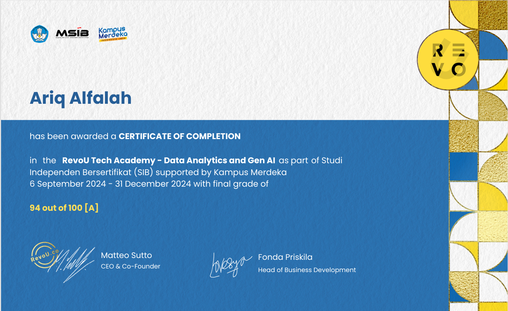
RevoU Tech Academy
Data Analytics & Gen AI (Grade 94/100 [A])
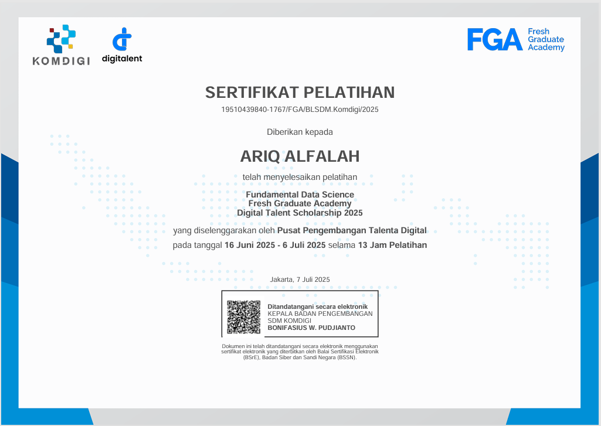
Komdigi Digitalent FGA
Fundamental Data Science (2025)
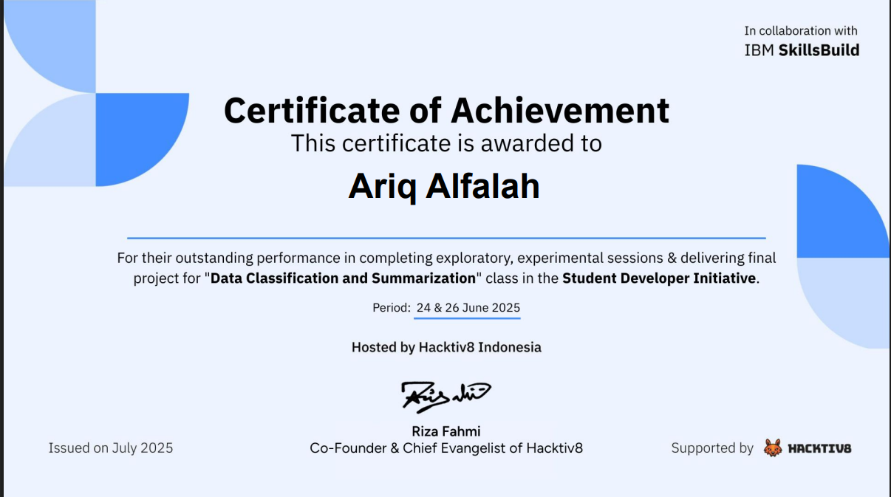
IBM SkillsBuild x Hacktiv8
Student Developer Initiative (2025)
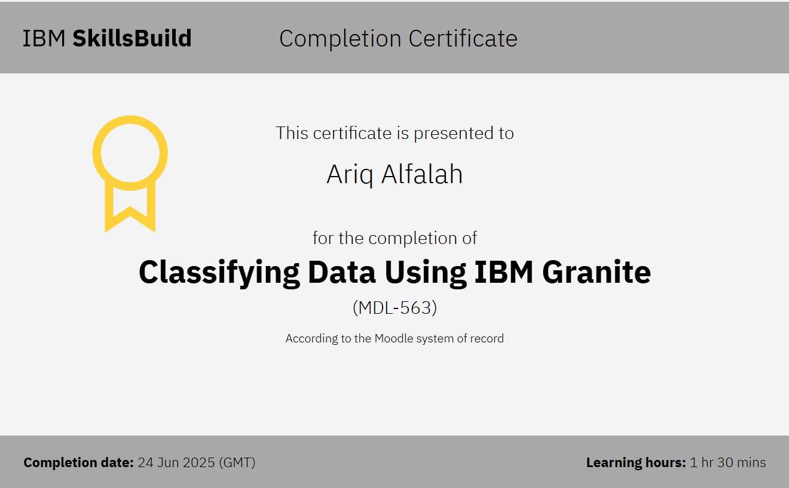
IBM SkillsBuild
Classifying Data Using IBM Granite
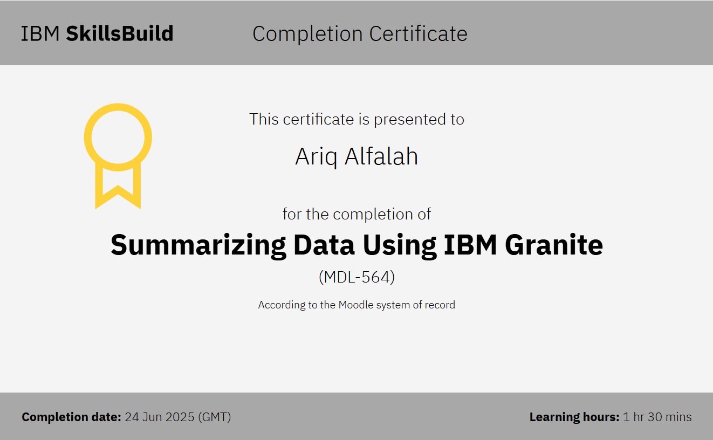
IBM SkillsBuild
Summarizing Data Using IBM Granite
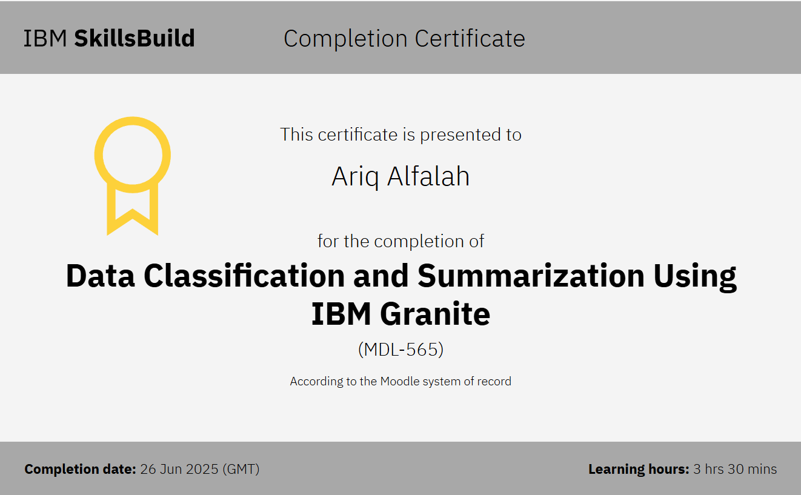
IBM SkillsBuild
Data Classification & Summarization
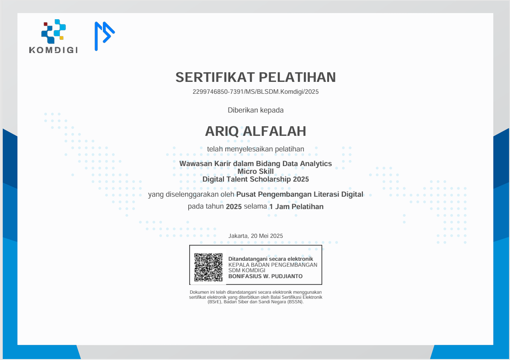
Komdigi Digitalent
Wawasan Karir Data Analytics
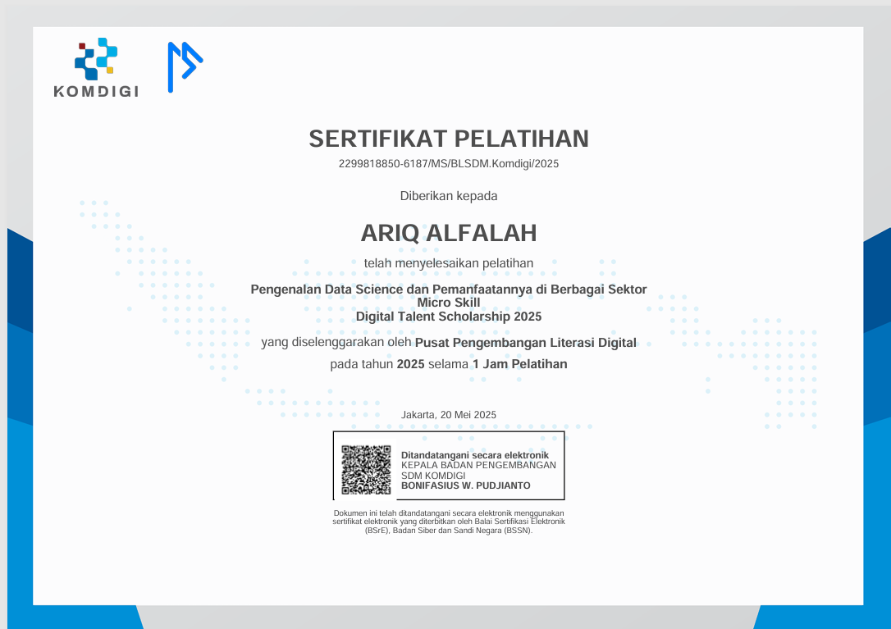
Komdigi Digitalent
Pengenalan Data Science

Binance Academy x BNB Chain
Indonesia Web3 Hackathon Workshop (2026)

LPTIK Univ. Nurdin Hamzah
Asisten Laboratorium Komputer (2024-2026)

The 1st JICEDHUM (UNJA)
Presenter Riset Kepercayaan AI (2026)
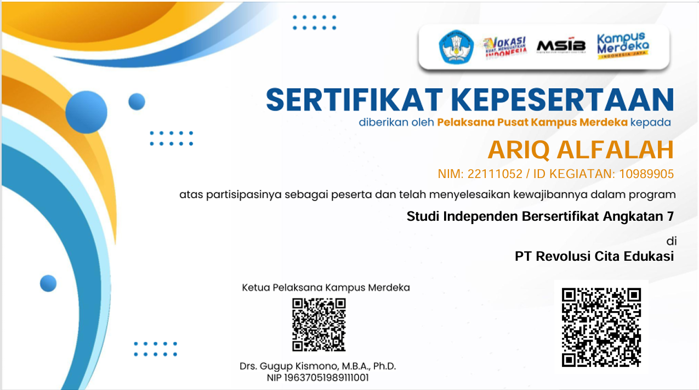
Kampus Merdeka SIB
Kepesertaan di RevoU (Angkatan 7)
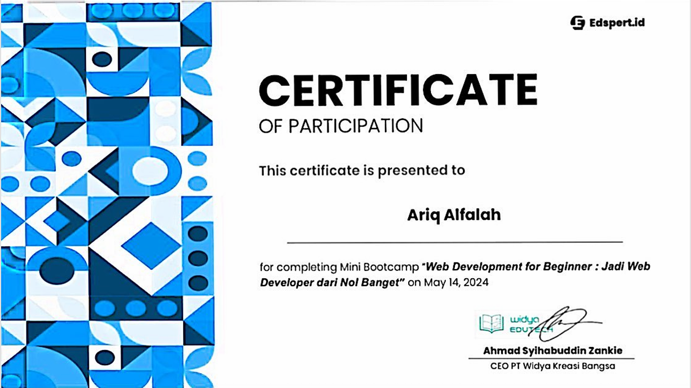
Edspert.id
Web Development for Beginner (2024)
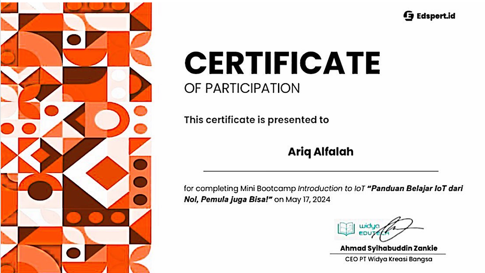
Edspert.id
Introduction to IoT (2024)
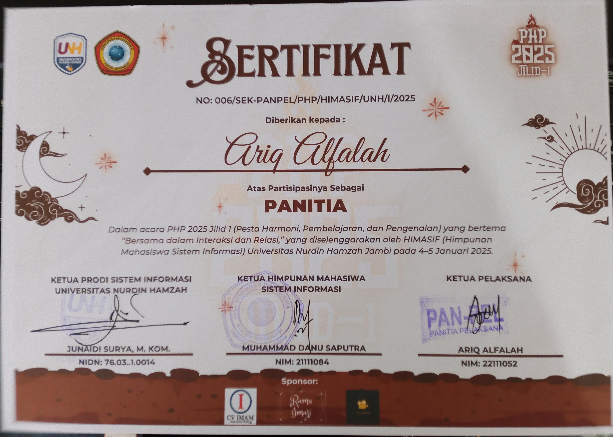
HIMASIF UNH
Ketua Pelaksana PHP 2025 (Januari 2025)
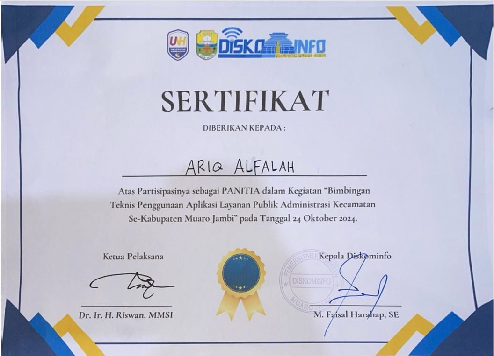
Diskominfo Muaro Jambi
Panitia Bimtek Aplikasi Layanan Publik
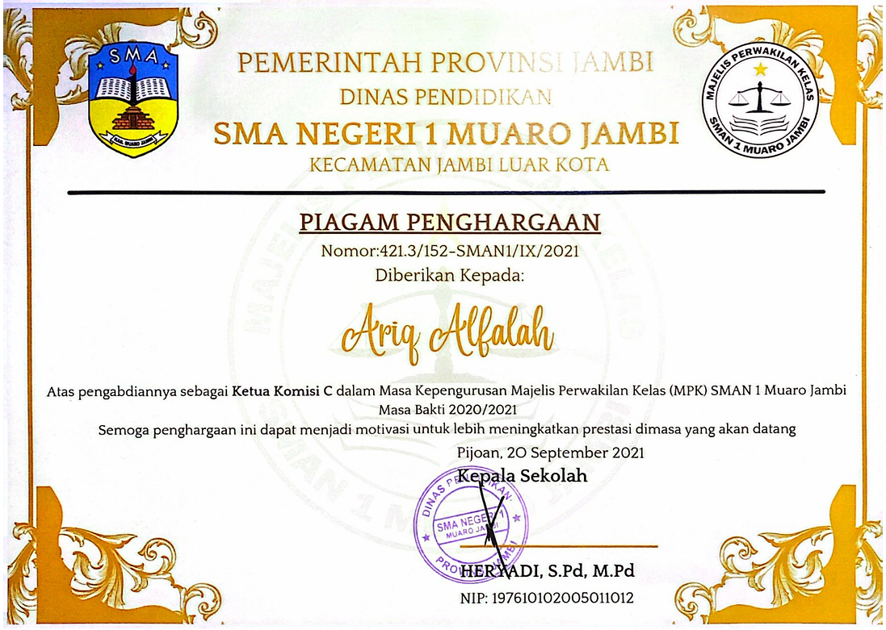
SMAN 1 Muaro Jambi
Ketua Komisi C MPK (2020/2021)
Hubungi Saya
Tertarik untuk berkolaborasi, mendiskusikan peluang kerja di bidang Data Analytics / BI, maupun pengembangan solusi berbasis kecerdasan buatan? Silakan hubungi saya melalui email atau jejaring profesional di bawah ini:
Email: ariqalfalah04@gmail.com
WhatsApp: +62 878-8714-4617